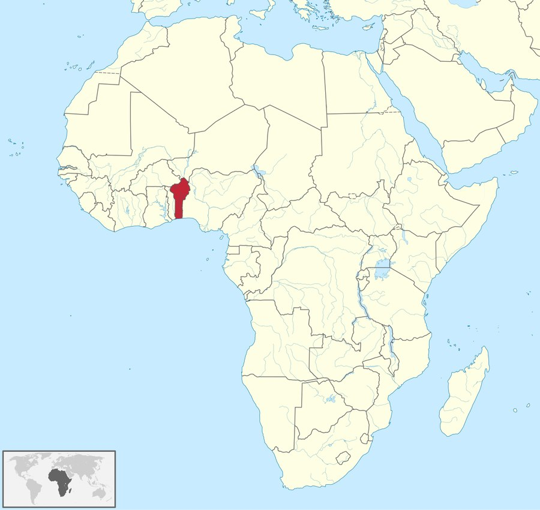
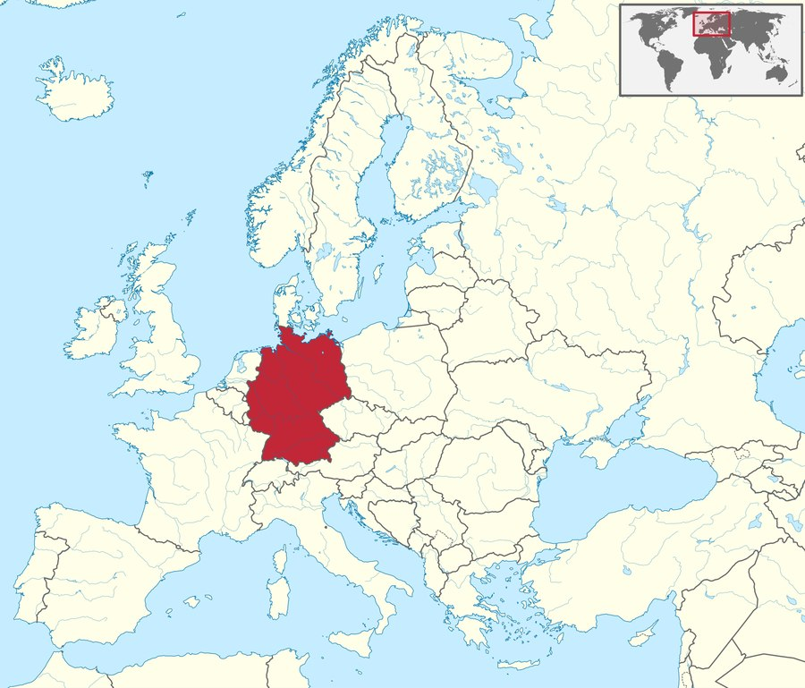

DONKO DEUTSCHLAND BERUF
DONKO DEUTSCHLAND BERUF
COTONOU → DEUTSCHLAND · WMS SHOWCASE
Fiche de poste · Bewerberprofil
Application vitrine simulant un système de gestion d'entrepôt (WMS), conçue pour démontrer mes compétences en gestion, cloud AWS et développement — en vue d'un Ausbildung en Allemagne.
Hassane DONKO
CEO, EMPIRE DONKO | PROJETS EN GESTION LOGISTIQUE
« L'Intelligence Artificielle optimise mon code, la gestion pilote mes flux, et la logistique d'entreposage concrétise ma vision. Cette application est le pont entre mes compétences numériques développées au Bénin et mon ambition d'apprentissage en Allemagne. »
— Hassane DONKO
Bac B · 2020 — AWS Cloud Practitioner · Avril 2026
Formation en Lettres et Sciences Sociales (Bac B) alliée à une pratique concrète du développement logiciel et de l'infrastructure cloud. Ce projet réunit ces compétences autour d'un cas d'usage réel : la logistique d'entrepôt.
Cotonou → Allemagne
Allemand intensif à la FLLAC (UAC) et au laboratoire de la Fondation Vallet (Bénin Excellence), Cotonou.
Examen officiel ÖSD (niveau visé B1/B2) chez Spass mit Deutsch, Abomey-Calavi.
Ausbildung en Allemagne : Fachkraft für Lagerlogistik ou Fachlagerist.
Création d'une UG (Haftungsbeschränkt) pour déployer mes logiciels (facturation/caisse, marketplace) sur le marché européen.
Module A
Logique Bac B : calcul en temps réel du prix de revient, de la marge et des alertes de rupture critique.
| Produit | Coût | Prix vente | Marge | Stock | Statut |
|---|
Module B
Logique « Zero Communication » : le colis scanné est rangé automatiquement, sans concertation orale entre coéquipiers.
Module C
Infrastructure serverless AWS : archivage documentaire, base de données d'inventaire, calcul planifié des marges.
Cliquez sur un service pour visualiser le flux de données.
Portfolio complet
L'ensemble de mes réalisations, projets et démonstrations en ligne — logiciels métiers, ingénierie blockchain et automatisation IA — réunis en un seul endroit.
Écosystème DONKO
Quinze outils déjà en ligne, développés au Bénin — logiciels métiers, ingénierie blockchain et automatisation IA — qui illustrent ma capacité à livrer des produits réels et fonctionnels.
Curriculum Vitae
Mes compétences en ingénierie blockchain et en automatisation IA reposent sur la même rigueur méthodologique que j'applique à la logistique et à la gestion d'entrepôt — la discipline technique au service d'un objectif concret : mon Ausbildung en Allemagne.
Ingénieur Smart Contract | Architecte Web3 & Blockchain | Expert Automatisation IA
Cotonou, Bénin · +229 01 96 80 91 06 · hassanedonko9@gmail.com · empiredonko@gmail.com
Portfolio : donko-dev.github.io/empirecode ·
GitHub : github.com/Donko-dev ·
LinkedIn : Hassane Donko
Ingénieur Blockchain et Architecte Web3 orienté résultats, avec une expérience concrète dans la conception, l'audit et le déploiement de smart contracts sécurisés sur des réseaux compatibles EVM. Fondateur de l'écosystème EMPIRE DONKO, un ensemble d'outils logiciels « offline-first » (sans connexion, serveur ni base de données requise), de solutions Web3, DePIN et de tokenomics avancées conçues de bout en bout. Maîtrise de Solidity, de l'optimisation du gas et des paramètres de sécurité des smart contracts, avec un historique éprouvé de fusion entre l'ingénierie logicielle classique, l'automatisation pilotée par l'IA et les architectures financières décentralisées (DeFi).
Architecte Blockchain Principal & Fondateur — EMPIRE DONKO
Architecte Passerelle de Paiement Crypto — DONKOEXCHANGE & CRYPTPAY
Développeur Full-Stack & Consultant IT — WEBCRAFT HD
MAJESTIC (MAJ)
0xeCb325d3696907517dB717Bbd1eb26eE472E3d0aRICH (RICH)
0x5cb60a940830d6e191323d7d243b67e7b223791eITAF (ITAF)
0xa4fa396e86733ad5ebc80a30fea9c1be602d1462Cliquez sur une adresse pour consulter la vérification en direct sur BscScan.
Preuves & coulisses
Un aperçu de mon parcours en images — de mes débuts à Cotonou à mes premiers pas en Allemagne, mis à jour au fil de mon aventure.

Bénin, Togo… — fichiers galerieNA
Aucune photo pour l'instant.

Allemagne, Autriche… — fichiers galerieNE
Aucune photo pour l'instant.